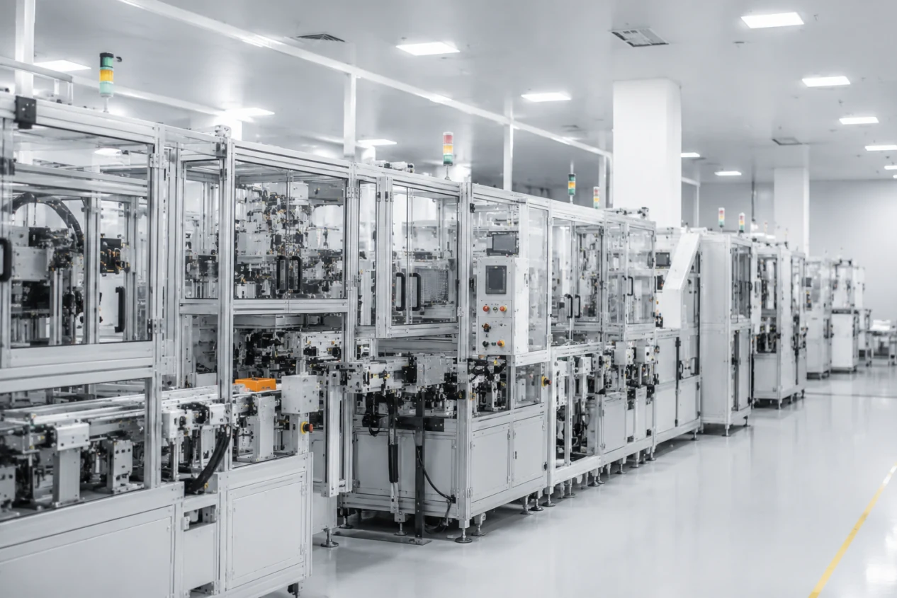
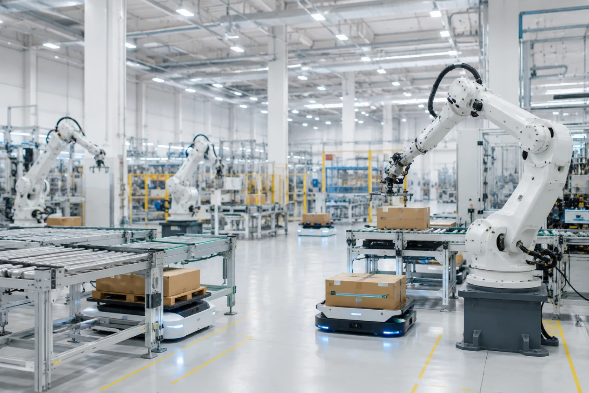
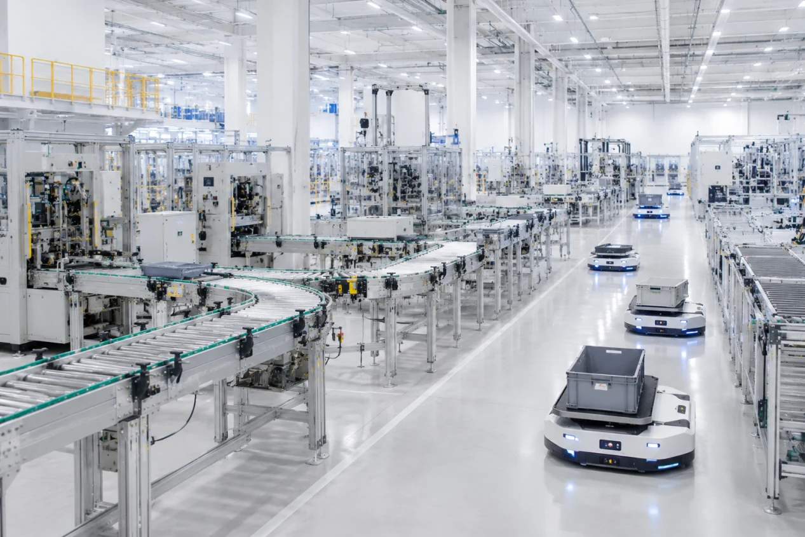
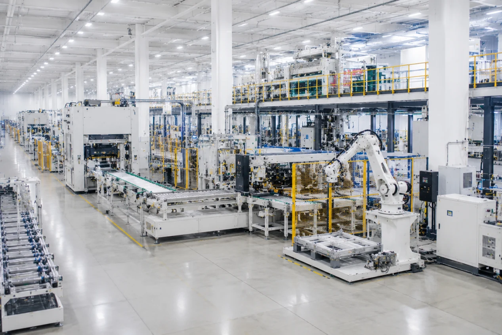

Typical Technologies
- Shuttle ASRS and four-way shuttle systems
- Stacker crane, miniload, and cold storage ASRS
- Conveyor systems, AGV logistics, WMS/WES integration
Explore practical technologies and integrated systems designed to improve storage capacity, material flow, production efficiency, and operational performance.
Increase Storage Capacity. Improve Throughput. Reduce Manual Operations.
From shuttle systems and stacker cranes to AGV logistics and warehouse software, our solutions help warehouses operate more efficiently, accurately, and reliably.
When storage density, labor availability, throughput, temperature control, or traceability become limiting factors for growth.
System design, equipment coordination, controls, software integration, installation, commissioning, and case-based project planning,as well as delivery and comprehensive after-sales support.
Key application areas for improving production efficiency, material flow, labor stability, and factory operations.

Improve production efficiency and process consistency through integrated manufacturing systems.
Learn more
Reduce repetitive labor and increase operational stability.
Learn more
Connect production processes through intelligent transportation and line-feeding systems.
Learn more
Implement automation step by step without disrupting existing operations.
Learn moreYes. 13ASRS can begin with material handling, line feeding, or logistics automation, then expand into connected production systems.
Supporting packaging, printing, converting, processing, and production industries with specialized equipment and integrated manufacturing systems.
From individual machines to complete production lines, we help manufacturers improve efficiency, consistency, and operational performance.
Printing, converting, packaging, and bag-making technologies for flexible packaging and industrial production.
Learn moreFilling lines, film extrusion equipment, and integrated packaging production solutions.
Learn moreLaser cutting, laser processing, and advanced manufacturing equipment for industrial applications.
Learn moreWhether you're planning a warehouse upgrade, factory automation project, packaging production line, or manufacturing expansion, we can help you explore practical solutions, relevant technologies, and real project references.